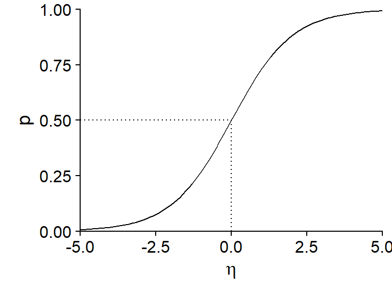
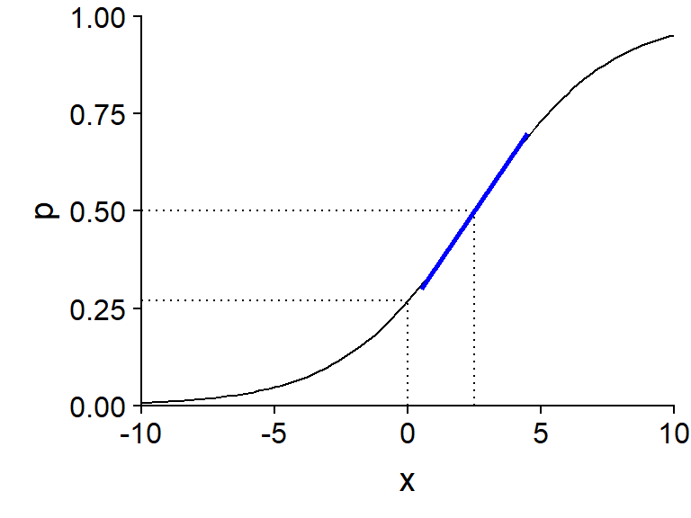
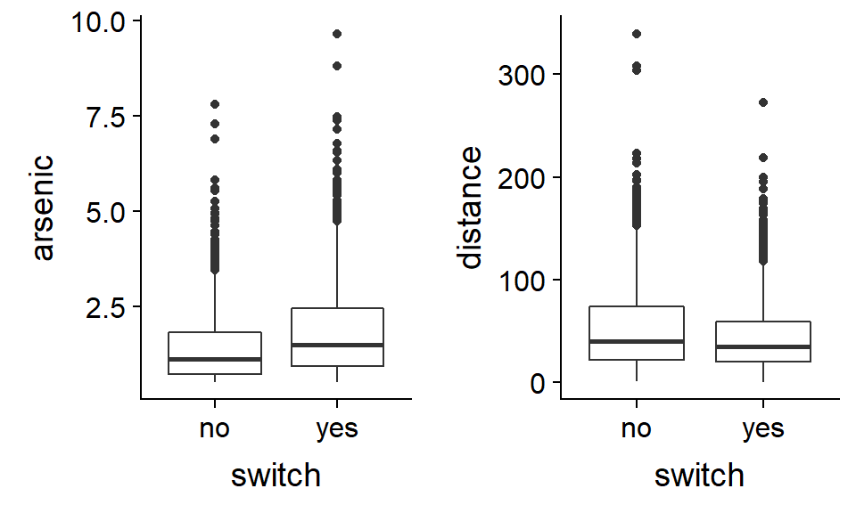
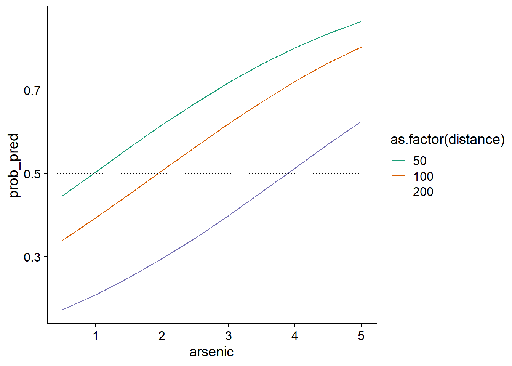
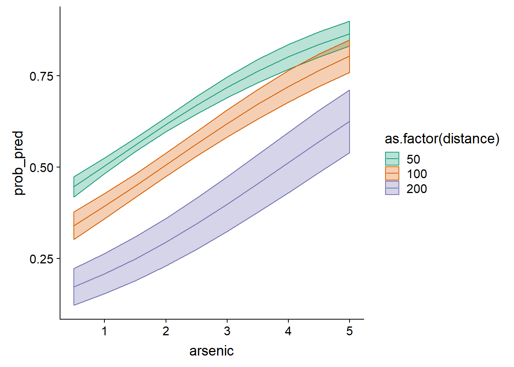
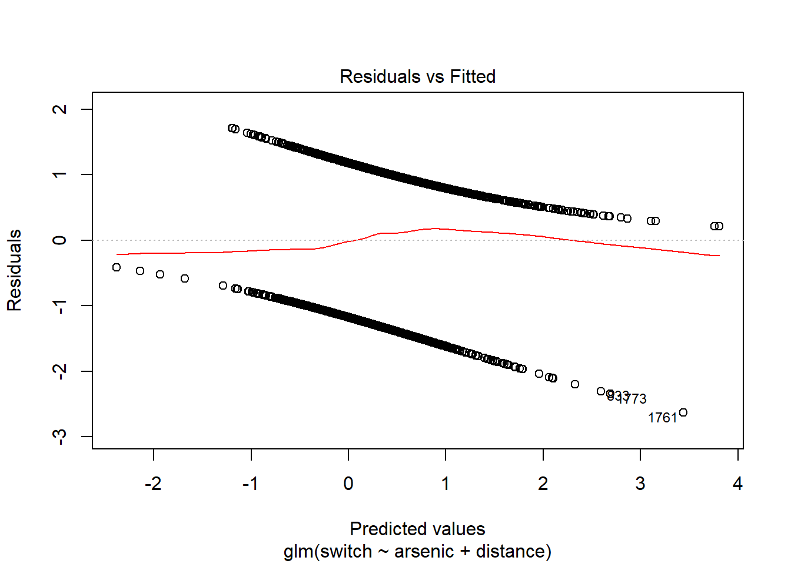
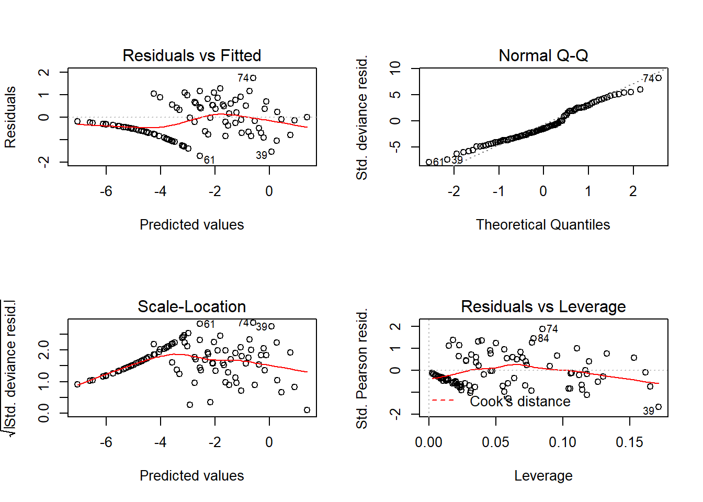

Régression logistique
1 novembre 2021
Objectifs
Connaître les composantes d’un modèle linéaire généralisé.
Utiliser la régression logistique pour modéliser une réponse binaire (ex.: présence/absence) ou binomiale (ex.: nombre de présences et d’absences).
Interpréter les résultats d’une régression logistique et visualiser les effets des prédicteurs.
Motivation
Supposons que nous nous intéressons à modéliser une réponse catégorique binaire, par exemple:
- survie ou mort d’individus dans un intervalle de temps donné;
- présence ou absence d’une espèce sur différents sites;
- décision d’un animal de demeurer au même site ou migrer à un autre site.
Numériquement, cette réponse est codée par des valeurs de 0 ou 1. Dans un contexte de régression, ce qui nous intéresse est la moyenne de cette réponse, soit la proportion des cas où la réponse est 1 (on pourrait aussi dire “la probabilité que la réponse soit 1”).
Nous pourrions modéliser la relation entre cette réponse moyenne et différents prédicteurs avec un modèle de régression linéaire, tel que vu lors des derniers cours:
\[ \hat{y} = \beta_0 + \sum_{i = 1}^m \beta_i x_i \]
Toutefois, cette approche pose quelques problèmes:
- Pour certaines valeurs des prédicteurs, on obtient une réponse prédite \(\hat{y}\) inférieure à 0 ou supérieure à 1, ce qui n’a pas de sens dans ce contexte.
- Ce type de réponse ne satisfait pas le critère d’homogénéité de la variance du modèle de régression linéaire. La variance des réponses individuelles est beaucoup plus grande lorsque la probabilité est près de 0.5 que lorsqu’elle s’approche de 0 ou 1.
Les modèles linéaires généralisés (generalized linear models ou GLM) résolvent ces deux problèmes, en permettant de choisir différentes transformations de la prédiction linéaire et différentes distributions pour les réponses individuelles en fonction de la réponse moyenne.
Afin de mieux expliquer le principe de ces modèles, nous reformulons le modèle de régression linéaire multiple, en divisant ce modèle en trois composantes:
- un prédicteur linéaire (une combinaison linéaire des variables explicatives): \(\eta = \beta_0 + \sum_{i = 1}^m \beta_i x_i\);
- un lien entre la réponse moyenne et la valeur du prédicteur (ici, simplement l’égalité): \(\hat{y} = \eta\); et
- une distribution des réponses individuelles en fonction de la réponse moyenne (ici, la distribution normale): \(y \sim N(\hat{y}, \sigma)\).
Les modèles linéaires généralisés conservent le premier élément (la prédiction dépend d’une combinaison linéaire des variables \(x_i\)), mais utilisent différentes fonctions de lien et différentes distributions pour la réponse. La régression logistique que nous verrons aujourd’hui est conçue pour modéliser les variables à réponse binaire, tandis que la régression de Poisson vue au prochain cours est conçue pour les données provenant de comptages (nombres entiers \(\ge\) 0).
Modèle de régression logistique
La régression logistique est un exemple de modèle linéaire généralisé où la réponse correspond à une ou plusieurs observations d’un résultat binaire (0 ou 1). Dans ce modèle:
- la réponse suit une distribution binomiale et
- la fonction logit permet de relier la probabilité d’un résultat positif (\(y = 1\)) à la valeur du prédicteur linéaire.
Distribution binomiale
Imaginons \(n\) répétitions indépendantes d’une expérience qui peut se conclure par la présence (1) ou l’absence (0) d’un événement, avec une probabilité de présence \(p\) pour chaque répétition. Dans ce cas, le nombre de présences \(y\) suit une distribution binomiale: \(y \sim B(n, p)\). Selon cette distribution, la probabilité d’obtenir \(y\) présences et \(n-y\) absences correspond à:
\[ \frac{n!}{y!(n-y)!} p^y (1-p)^{n-y} = \binom{n}{y} p^y(1-p)^{n-y}\]
Pour comprendre cette formule, prenons par exemple la séquence de résultats 01001 (\(n = 5\) et \(y = 2\)). La probabilité d’obtenir 0 au premier essai est \(1-p\), la probabilité d’obtenir 1 au deuxième essai est \(p\), et ainsi de suite. La probabilité d’une séquence d’essais indépendants est le produit des probabilités de chaque essai, donc \(p^2(1-p)^3\), ce qui correspond à la partie \(p^y(1-p)^{n-y}\) de la formule. Toutefois, il s’agit de la probabilité d’une seule séquence de deux 1 et trois 0. Chacune des autres séquences possibles (11000, 00110, etc.) a la même probabilité. Ce nombre de séquences possibles est égal à \(n!/y!(n-y)!\), où \(!\) représente l’opération factorielle.
Le nombre moyen de présences est égal à \(np\), avec une variance égale à \(np(1-p)\). La proportion moyenne de présence est égale à \(p\) avec une variance de \(p(1-p)/n\).
La distribution binomiale avec un seul essai (\(n = 1\)) porte le nom de distribution de Bernoulli, avec une moyenne de \(p\) et une variance égale à \(p(1-p)\).
Dans R, les fonctions permettant de calculer des quantités à partir de la distribution binomiale portent le suffixe binom. Par exemple, la probabilité d’obtenir 2 présences sur 5 essais, avec une probabilité de présence de 0.3, est égale à:
dbinom(2, 5, 0.3)## [1] 0.3087Consultez la rubrique d’aide ?Binomial pour plus de détails.
Lien logit
Pour relier la probabilité de présence \(p\) de la distribution binomiale au prédicteur linéaire \(\eta = \beta_0 + \sum_{i = 1}^m \beta_i x_i\), le lien le plus souvent utilisé est la fonction logit.
\[ \eta = \text{logit}(p) = \log \left( \frac{p}{1-p} \right) \]
Si on inverse cette équation, on obtient une expression pour \(p\) en fonction de \(\eta\).
\[ p = \frac{1}{1 + e^{-\eta}} \]
Cette deuxième équation porte souvent le nom de fonction logistique. Voici son graphique:

Notons certaines propriétés importantes de cette fonction:
- Si \(\eta = 0\), \(p = 0.5\) (probabilité de 50%).
- La fonction est symétrique autour de son point central: \(p(-\eta) = 1 - p(\eta)\).
- La probabilité approche 0 lorsque \(\eta\) prend des valeurs très négatives et approche 1 lorsque \(\eta\) prend des valeurs très positives, sans jamais atteindre ces valeurs extrêmes.
- La pente de la courbe est plus prononcée au centre et plus faible (tendant vers 0) aux extrémités. Du point de vue de la régression, cela signifie que l’effet des variables explicatives (contenues dans \(\eta\)) sur la probabilité de présence est plus important lorsque celle probabilité est près de 50%.
En résumé, la régression logistique est basée sur le modèle suivant:
- \(y \sim B(n, p)\) (distribution binomiale de la réponse)
- \(\text{logit}(p) = \beta_0 + \sum_{i = 1}^m \beta_i x_i\) ou de façon équivalente:
\[p = \frac{1}{1 + e^{-(\beta_0 + \sum_{i = 1}^m \beta_i x_i)}}\]
Contrairement à la régression linéaire, les coefficients \(\beta\) d’un modèle linéaire généralisé ne sont pas estimés par la méthode des moindres carrés, mais plutôt par la méthode plus générale du maximum de vraisemblance (maximum likelihood). En bref, cette méthode choisit les valeurs des coefficients \(\beta\) qui maximisent la probabilité conjointe de l’ensemble des observations de \(y\).
Interprétation des coefficients
Le graphique ci-dessous présente la probabilité \(p\) pour un modèle logistique à une variable \(x\) avec \(\beta_0 = -1\) et \(\beta_1\) = 0.4, donc: \(\text{logit}(p) = -1 + 0.4x\).

L’ordonnée à l’origine \(\beta_0\) est égale au logit de \(p\) lorsque \(x = 0\). Pour calculer la valeur de \(p\) correspondant à une valeur donnée de \(\text{logit}(p)\), on peut utiliser la fonction plogis dans R (qui correspond donc à la fonction logistique ou “inverse du logit”), tandis que la transformation logit elle-même est obtenue par la fonction qlogis.
plogis(-1)## [1] 0.2689414qlogis(0.5)## [1] 0La valeur de \(x\) pour laquelle le prédicteur linéaire est zéro (ici, \(-1 + 0.4x = 0\) donne \(x = 2.5\)) est associée à une probabilité \(p = 0.5\). C’est à cet endroit de la courbe que la pente de \(p\) vs. \(x\) est maximale: cette pente maximale, indiquée par un ligne bleue dans le graphique, est égale à \(\beta_1/4\), où \(\beta_1\) est le coefficient de \(x\) dans le prédicteur linéaire. Ici, puisque \(\beta_1 = 0.4\), on peut dire que lorsque \(x\) augmente de 1, la probabilité \(p\) augmente au maximum de 0.1 (ou 10%).
Régression logistique avec R
Dans R, la régression logistique peut être utilisée pour deux types de réponses:
- une variable binaire codée par des valeurs logiques (FALSE, TRUE), des valeurs numériques (0, 1) ou un facteur (le premier niveau du facteur correspond à 0, les autres à 1);
- une variable binomiale décrite par deux colonnes (nombre de présences, nombre d’absences).
Nous verrons un exemple de chaque cas dans ce cours.
Exemple: Concentrations d’arsenic dans des puits au Bangladesh
Le tableau de données Wells du package carData présente les données d’une étude menée auprès de 3020 ménages au Bangladesh. Les puits utilisés par ces ménages avaient une concentration d’arsenic (variable arsenic, en multiples de 100 \(\mu g/L\)) supérieure au niveau jugé sûr. La réponse binaire switch indique si le ménage a changé de puits. En plus de la concentration d’arsenic, le tableau contient d’autres prédicteurs, dont la distance vers le puits sûr le plus près (distance en mètres).
Cet exemple est tiré du manuel de Gelman et Hill, Data Analysis Using Regression and Multilevel/Hierarchical Models.
library(carData)
str(Wells)## 'data.frame': 3020 obs. of 5 variables:
## $ switch : Factor w/ 2 levels "no","yes": 2 2 1 2 2 2 2 2 2 2 ...
## $ arsenic : num 2.36 0.71 2.07 1.15 1.1 3.9 2.97 3.24 3.28 2.52 ...
## $ distance : num 16.8 47.3 21 21.5 40.9 ...
## $ education : int 0 0 10 12 14 9 4 10 0 0 ...
## $ association: Factor w/ 2 levels "no","yes": 1 1 1 1 2 2 2 1 2 2 ...En explorant ce type de données, il peut être utile de comparer la distribution des prédicteurs potentiels lorsque la réponse est positive ou négative.

En moyenne, les ménages qui changent de puits ont une concentration d’arsenic plus élevée dans leur puits original et sont situés plus près d’un puits sûr. Toutefois, aucune des deux variables ne semble être associée très fortement avec la réponse.
Note: Vu la distribution asymétrique des variables arsenic et distance, une transformation logarithmique de ces variables serait justifiable. Pour ce problème particulier, cette transformation affecte peu l’ajustement du modèle, donc nous conservons l’échelle originale des variables qui est plus facile à interpréter.
La fonction glm sert à estimer les paramètres de modèles linéaires généralisés. Comme pour les modèles linéaires, on spécifie d’abord une formule et un tableau de données. Ensuite, il faut indiquer la distribution de la réponse avec l’argument family, ainsi que la fonction de lien (link). Pour la régression logistique, il s’agit d’une distribution binomiale avec un lien logit. Notez que puisque le logit est la fonction de lien par défaut pour une réponse binomiale, sa mention est facultative (on aurait pu seulement écrire family = binomial).
mod <- glm(switch ~ arsenic + distance, data = Wells,
family = binomial(link = "logit"))
summary(mod)##
## Call:
## glm(formula = switch ~ arsenic + distance, family = binomial(link = "logit"),
## data = Wells)
##
## Deviance Residuals:
## Min 1Q Median 3Q Max
## -2.6351 -1.2139 0.7786 1.0702 1.7085
##
## Coefficients:
## Estimate Std. Error z value Pr(>|z|)
## (Intercept) 0.002749 0.079448 0.035 0.972
## arsenic 0.460775 0.041385 11.134 <2e-16 ***
## distance -0.008966 0.001043 -8.593 <2e-16 ***
## ---
## Signif. codes: 0 '***' 0.001 '**' 0.01 '*' 0.05 '.' 0.1 ' ' 1
##
## (Dispersion parameter for binomial family taken to be 1)
##
## Null deviance: 4118.1 on 3019 degrees of freedom
## Residual deviance: 3930.7 on 3017 degrees of freedom
## AIC: 3936.7
##
## Number of Fisher Scoring iterations: 4L’ordonnée à l’origine est le logit de la probabilité de changer de puits pour une concentration d’arsenic et une distance toutes deux égales à zéro. Cette probabilité est donnée par plogis(0.0027) soit environ 50%. Toutefois, puisque le modèle a été ajusté à un tableau de données où la concentration d’arsenic est toujours supérieure à 0.5, l’ordonnée à l’origine n’a pas vraiment de sens.
Les coefficients des prédicteurs indiquent qu’une augmentation de la concentration d’arsenic d’une unité (100 \(\mu g/L\)) résulte au maximum en une augmentation de ~0.12 de la probabilité de changer de puits (0.46/4), tandis qu’une augmentation de 1m de la distance résulte au maximum en une diminution de 0.0022 (0.0087/4) de cette probabilité (équivalent à une diminution de ~0.22 par 100m de distance).
Visualiser les prédictions du modèle
Pour mieux comprendre l’effet non-linéaire des prédicteurs, nous pouvons visualiser les prédictions du modèle pour différentes combinaisons de la concentration d’arsenic et de la distance.
Créons d’abord un nouveau tableau de données pour les prédictions, contenant les combinaisons de 10 concentrations d’arsenic (réparties entre 0.5 et 5) et 3 distances au puits sûr le plus près (50 m, 100 m et 200 m). Nous utilisons pour ce faire la fonction expand.grid.
wells_nouv <- expand.grid(arsenic = seq(0.5, 5, 0.5), distance = c(50, 100, 200))Regardons ce qui se produit si nous appliquons la fonction predict au modèle avec ces nouvelles données.
wells_nouv$pred <- predict(mod, wells_nouv)
summary(wells_nouv$pred)## Min. 1st Qu. Median Mean 3rd Qu. Max.
## -1.5602 -0.3600 0.2518 0.2238 0.8823 1.8583Ces valeurs ne se situent pas entre 0 et 1 car par défaut, predict retourne les valeurs du prédicteur linéaire \(\eta\) (correspondant à l’option type = "link"). Pour obtenir les prédictions sur l’échelle de la réponse (ici, des probabilités), il faut spécifier type = "response".
wells_nouv$prob_pred <- predict(mod, wells_nouv, type = "response")
ggplot(wells_nouv, aes(x = arsenic, y = prob_pred, color = as.factor(distance))) +
geom_line() +
geom_hline(yintercept = 0.5, linetype = "dotted") +
scale_color_brewer(palette = "Dark2")
Nous pourrions noter par exemple que plus la distance vers un puits sûr augmente, plus la concentration doit être élevée pour qu’un ménage change de puits la majorité du temps (ligne pointillée à \(p = 0.5\)).
Pour visualiser l’intervalle de confiance de ces probabilités, nous devons revenir à l’échelle du prédicteur linéaire \(\eta\) plutôt que celle de la réponse, obtenir les erreurs-types des valeurs \(\eta\) avec l’option se.fit = TRUE, calculer un intervalle de 1.96 erreur-type de part et d’autre de \(\eta\), puis finalement convertir \(\eta\) et les bornes de l’intervalle en valeurs de \(p\) avec la fonction plogis.
prob_pred <- predict(mod, wells_nouv, se.fit = TRUE)
wells_nouv$prob_pred <- prob_pred$fit
wells_nouv$prob_se <- prob_pred$se.fit
ggplot(wells_nouv, aes(x = arsenic, y = plogis(prob_pred), color = as.factor(distance),
fill = as.factor(distance))) +
geom_ribbon(aes(ymin = plogis(prob_pred - 1.96*prob_se),
ymax = plogis(prob_pred + 1.96*prob_se)), alpha = 0.3) +
geom_line() +
scale_color_brewer(palette = "Dark2") +
scale_fill_brewer(palette = "Dark2")
La raison pour laquelle nous devons d’abord calculer l’intervalle de confiance sur l’échelle du prédicteur linéaire est que l’incertitude sur celui-ci suit davantage une distribution normale que l’incertitude sur \(p\).
Notez qu’un intervalle de prédiction des observations individuelles serait moins intéressant ici, car ces observations sont toujours 0 ou 1.
Vérifier l’ajustement du modèle
Les graphiques de diagnostic basés sur les résidus individuels ne sont pas très utiles lorsque la réponse est binaire, comme vous pouvez le constater en appelant la fonction plot(mod).

Pour chaque valeur prédite (ici, les prédictions sont représentées sur l’échelle du prédicteur linéaire, pas celle de \(p\)), il n’y a que deux valeurs possibles pour le résidu: l’une positive si la réponse est 1, et l’autre négative si la réponse est 0. C’est pourquoi on observe deux lignes de points sur le graphique ci-dessus.
Une meilleure stratégie serait de regrouper les points avec des probabilités prédites semblables, puis calculer le résidu correspondant à la différence entre (1) la proportion de réponses positives observées parmi les points d’un groupe et (2) la probabilité moyenne pour ces points. Par exemple, pour un groupe de 20 points avec 11 réponses positives et une prédiction moyenne de 0.6, le résidu serait -0.05 (11/20 - 0.6). La fonction binnedplot du package arm sert à créer un tel graphique des résidus groupés (binned residual plot).
library(arm)
binnedplot(fitted(mod), residuals(mod, type = "response"))
Note: Il existe différentes définitions des résidus pour un modèle linéaire généralisé, donc il faut spécifier un type dans la fonction residuals. Pour ce graphique-ci, nous utilisons les résidus sur l’échelle de la réponse (type = "response"), soit les différences entre les réponses observées et prédites (\(y - \hat{y}\)).
Par défaut, binnedplot choisit le nombre de groupes d’après un compromis visant à avoir suffisamment de points par groupe (pour que chaque proportion moyenne soit précise) et suffisamment de groupes (pour voir la tendance s’il y en a une). Lorsque le nombre d’observations \(n > 100\), le nombre de groupes choisi est environ \(\sqrt{n}\).
Le graphique produit par binnedplot indique aussi un intervalle de prédiction à 95% (lignes grises) pour les résidus moyens. Ainsi, si le modèle binomial est bon, environ 95% des résidus devraient se trouver à l’intérieur de cet intervalle. Ici, c’est le cas de 52 résidus sur 54 ou 96%.
Coefficient de détermination
L’estimation des paramètres des modèles linéaires généralisés ne fait pas appel à la méthode des moindres carrés. Pour cette raison, le \(R^2\) basé sur la somme des écarts carrés ne constitue pas une bonne mesure d’ajustement pour ce type de modèle.
La déviance est une mesure d’écart entre les valeurs attendues et les observations calculée à partir de la vraisemblance (\(L\), pour likelihood) du modèle pour les paramètres estimés.
\[ D = -2 \log L \]
Cette expression est aussi égale au premier terme de l’AIC. Plus le modèle accorde une grande probabilité aux observations, plus \(L\) est grand et plus la déviance est petite. Comme pour l’AIC, la valeur absolue de la déviance n’a pas de sens, mais cette quantité est utile pour comparer l’ajustement de différents modèles.
Dans le sommaire du résultat de glm, la déviance du modèle ajusté est indiquée comme Residual Deviance. Le sommaire inclut aussi une autre valeur, Null Deviance, qui correspond à la déviance du modèle nul ne comptant aucun prédicteur. Ces deux valeurs jouent un rôle semblable à la sommes des écarts carrés résiduels et la somme des écarts carrés totaux dans le modèle linéaire. On peut donc définir le pseudo R\(^2\) (ou \(R^2\) de McFadden) comme la fraction de la déviance du modèle nul expliquée par le modèle incluant les prédicteurs.
pseudo_R2 <- 1 - mod$deviance/mod$null.deviance
pseudo_R2## [1] 0.04551395La concentration d’arsenic et la distance, malgré leur effet significatif, n’expliquent donc pas une grande partie de la décision de changer de puits ou non. Cela est cohérent avec notre exploration initiale des données.
La formule du \(R^2\) basé sur la déviance s’applique à tous les modèles ajustés par maximum de vraisemblance. Pour la régression logistique spécifiquement, une autre version du coefficient de détermination a été proposée par Tjur:
\[ {R^2}_{\text{Tjur}} = \bar{\hat{y}}_{(y=1)} - \bar{\hat{y}}_{(y=0)} \]
Autrement dit, le \(R^2\) de Tjur mesure la différence entre la réponse moyenne prédite pour les cas où la réponse observée est 1 et la réponse moyenne prédite pour les cas où la réponse observée est 0. Il indique donc à quel point le modèle peut “séparer” les deux groupes \(y = 1\) et \(y = 0\). À l’extrême, un coefficient de 0 indique que le modèle prédit en moyenne la même réponse pour les deux groupes, tandis qu’un coefficient de 1 indique que le modèle prédit avec certitude la bonne réponse pour toutes les observations.
Pour notre exemple, le \(R^2\) de Tjur est d’environ 0.06.
r2_tjur <- mean(mod$fitted.values[mod$y == 1]) - mean(mod$fitted.values[mod$y == 0])
r2_tjur## [1] 0.06004311Régression logistique binomiale
Dans l’exemple précédent, chaque rangée du tableau correspondait à une seule réponse binaire (0 ou 1) et des valeurs des prédicteurs qui lui sont associées. Dans un contexte expérimental, il est possible d’avoir plusieurs réplicats indépendants avec les mêmes valeurs des prédicteurs; le nombre de réponses égales à 1 (présences) parmi ces \(N\) réplicats peut être modélisé directement comme une variable binomiale.
Exemple: Mortalité d’escargots en fonction de l’environnement
Le tableau de données snails du package MASS présente les résultats d’une expérience où des escargots de 2 espèces (Species) ont été exposés à 3 différentes valeurs de température (Temp) et 4 taux d’humidité relative (Rel.Hum) pour 1 à 4 semaines (Exposure). Vingt escargots (N) ont été suivis pour chacune des 96 combinaisons possible de ces quatre variables; la variable Deaths indique le nombre d’entre eux qui sont morts durant l’expérience.
library(MASS)
str(snails)## 'data.frame': 96 obs. of 6 variables:
## $ Species : Factor w/ 2 levels "A","B": 1 1 1 1 1 1 1 1 1 1 ...
## $ Exposure: int 1 1 1 1 1 1 1 1 1 1 ...
## $ Rel.Hum : num 60 60 60 65.8 65.8 65.8 70.5 70.5 70.5 75.8 ...
## $ Temp : int 10 15 20 10 15 20 10 15 20 10 ...
## $ Deaths : int 0 0 0 0 0 0 0 0 0 0 ...
## $ N : int 20 20 20 20 20 20 20 20 20 20 ...Dans cet exemple, nous coderons la mortalité par 1 et la survie (absence de mortalité) par 0. Pour appliquer une régression logistique binomiale à ces données, la réponse de notre formule (à gauche du ~) doit être composée de deux colonnes (nombre de 1 et nombre de 0) regroupées avec cbind. Ici, la variable représentant le nombre de 0 (les survivants) est obtenu en soustrayant Deaths de N.
mod_snails <- glm(cbind(Deaths, N - Deaths) ~ Species + Exposure + Rel.Hum + Temp,
data = snails, family = binomial)
summary(mod_snails)##
## Call:
## glm(formula = cbind(Deaths, N - Deaths) ~ Species + Exposure +
## Rel.Hum + Temp, family = binomial, data = snails)
##
## Deviance Residuals:
## Min 1Q Median 3Q Max
## -1.7261 -0.7107 -0.3362 0.4231 1.7510
##
## Coefficients:
## Estimate Std. Error z value Pr(>|z|)
## (Intercept) -1.40495 0.97070 -1.447 0.148
## SpeciesB 1.30864 0.16350 8.004 1.20e-15 ***
## Exposure 1.50339 0.10235 14.689 < 2e-16 ***
## Rel.Hum -0.10684 0.01388 -7.699 1.37e-14 ***
## Temp 0.09404 0.01927 4.881 1.06e-06 ***
## ---
## Signif. codes: 0 '***' 0.001 '**' 0.01 '*' 0.05 '.' 0.1 ' ' 1
##
## (Dispersion parameter for binomial family taken to be 1)
##
## Null deviance: 539.72 on 95 degrees of freedom
## Residual deviance: 55.07 on 91 degrees of freedom
## AIC: 223.93
##
## Number of Fisher Scoring iterations: 5Nous remarquons d’abord que le modèle explique une bonne partie de la variation du taux de mortalité entre les groupes (le pseudo-R\(^2\) de McFadden est égal à 0.9). Puisque chaque “observation” (rangée) est un sommaire de 20 individus, la variation aléatoire de la réponse est moins grande que lorsqu’on considère les observations individu par individu; il n’est donc pas étonnant que le pseudo-R\(^2\) soit plus élevé dans ce cas.
D’après le signe des coefficients, la mortalité est plus grande pour l’espèce B que l’espèce A. Cette mortalité augmente aussi avec le temps d’exposition et la température, mais diminue avec une hausse d’humidité relative (dans la plage de valeurs considérée).
Avec plusieurs observations par rangée, les résidus individuels contiennent davantage d’information, donc les graphiques de diagnostic conventionnels sont plus utiles que dans l’exemple précédent. Cependant, près de la moitié des rangées n’ont aucun escargot mort (Deaths = 0) et ces zéros sont la cause de la “ligne” de résidus dans certains graphiques.

Puisque la réponse n’est pas supposée suivre une distribution normale, nous ne nous intéressons pas vraiment au diagramme quantile-quantile. Le graphique Residuals vs Fitted permet de vérifier l’absence de tendance dans les résidus et le graphique Residuals vs Leverage permet de détecter des points avec une grande influence sur la régression. Notez que trois des graphiques utilisent les résidus de Pearson (Std. Pearson resid.) qui correspondent aux résidus divisés par l’écart-type attendu de la réponse (rappelons-nous que cet écart-type dépend de la valeur attendue de la réponse ici). Ces résidus devraient donc avoir une variance plus homogène que les résidus bruts.
Problème de séparation parfaite
En utilisant le même jeu de données snails, essayons maintenant d’estimer l’effet de la durée d’exposition comme variable catégorique. Ceci revient à estimer séparément le taux de mortalité après 1, 2, 3 et 4 semaines.
mod_snails2 <- glm(cbind(Deaths, N - Deaths) ~ as.factor(Exposure), data = snails,
family = binomial)
summary(mod_snails2)##
## Call:
## glm(formula = cbind(Deaths, N - Deaths) ~ as.factor(Exposure),
## family = binomial, data = snails)
##
## Deviance Residuals:
## Min 1Q Median 3Q Max
## -2.9350 -1.0881 -0.0002 0.5037 4.1261
##
## Coefficients:
## Estimate Std. Error z value Pr(>|z|)
## (Intercept) -20.75 888.02 -0.023 0.981
## as.factor(Exposure)2 17.25 888.02 0.019 0.985
## as.factor(Exposure)3 19.33 888.02 0.022 0.983
## as.factor(Exposure)4 20.13 888.02 0.023 0.982
##
## (Dispersion parameter for binomial family taken to be 1)
##
## Null deviance: 539.72 on 95 degrees of freedom
## Residual deviance: 182.38 on 92 degrees of freedom
## AIC: 349.24
##
## Number of Fisher Scoring iterations: 17Pourquoi avons-nous des coefficients et des erreurs-types aussi élevés? Regardons quel est le nombre moyen d’escargots morts pour chacune des valeurs de la variable Exposure.
group_by(snails, Exposure) %>%
summarize(mean(Deaths))## # A tibble: 4 x 2
## Exposure `mean(Deaths)`
## <int> <dbl>
## 1 1 0
## 2 2 0.583
## 3 3 3.88
## 4 4 7Dans le modèle ci-dessus, l’ordonnée à l’origine (Intercept) correspond au logit de la probabilité de mortalité pour la valeur de référence du facteur (Exposure = 1). Cependant, il n’y a aucune mort pour ce traitement dans les données. Puisque la fonction logistique ne peut jamais atteindre \(p = 0\), le résultat est un valeur très négative pour ce coefficient, avec une incertitude très élevée: concrètement, cela signifie que le taux de mortalité est très faible, trop faible pour bien être estimé avec des données.
Les autres coefficients ont des valeurs aussi grandes mais positives, simplement car ces effets sont estimés relativement au traitement de référence. Le problème ne se produit plus si on enlève les données avec Exposure= 1.
mod_snails3 <- glm(cbind(Deaths, N - Deaths) ~ as.factor(Exposure),
data = filter(snails, Exposure > 1), family = binomial)
summary(mod_snails3)##
## Call:
## glm(formula = cbind(Deaths, N - Deaths) ~ as.factor(Exposure),
## family = binomial, data = filter(snails, Exposure > 1))
##
## Deviance Residuals:
## Min 1Q Median 3Q Max
## -2.9350 -1.1027 -0.5109 0.5317 4.1261
##
## Coefficients:
## Estimate Std. Error z value Pr(>|z|)
## (Intercept) -3.5051 0.2712 -12.922 < 2e-16 ***
## as.factor(Exposure)3 2.0793 0.2948 7.053 1.75e-12 ***
## as.factor(Exposure)4 2.8861 0.2876 10.034 < 2e-16 ***
## ---
## Signif. codes: 0 '***' 0.001 '**' 0.01 '*' 0.05 '.' 0.1 ' ' 1
##
## (Dispersion parameter for binomial family taken to be 1)
##
## Null deviance: 366.69 on 71 degrees of freedom
## Residual deviance: 182.38 on 69 degrees of freedom
## AIC: 347.24
##
## Number of Fisher Scoring iterations: 5Cet exemple illustre le problème dit de séparation parfaite. En raison du lien logit, le modèle de régression logistique représente l’effet de paramètres qui modifient la probabilité d’une réponse de façon continue entre 0 et 1. Ce modèle ne peut pas estimer les effets d’un prédicteur s’il y a une séparation parfaite entre les cas où \(y = 0\) et \(y = 1\). Pour un prédicteur catégorique, le problème survient si une catégorie contient entièrement des réponses positives ou négatives, comme dans l’exemple précédent. Pour une variable numérique, le problème survient si \(y\) est toujours 0 en-dessous d’une certaine valeur de \(x\) et toujours 1 au-dessus, ou vice versa.
Il existe des méthodes dites de réduction de biais qui pénalisent les coefficients trop élevés afin d’obtenir des estimés réalistes même dans le cas de séparation parfaite. Nous n’en discuterons pas davantage dans ce cours, mais vous pouvez trouver ces méthodes dans le package brglm.
Résumé
Un modèle linéaire généralisé est composé d’un prédicteur linéaire (combinaison linéaire des variables explicatives), d’une fonction de lien pour la réponse moyenne, et d’une distribution statistique de la réponse en fonction de sa moyenne.
La régression logistique sert à modéliser des réponses binaires (0 ou 1) ou binomiales (nombre de 0 et de 1). Elle utilise un lien logit et une distribution binomiale de la réponse.
La fonction logit transforme une probabilité entre 0 et 1 en un nombre réel entre -\(\infty\) et +\(\infty\). Un logit négatif correspond à une probabilité en-dessous de 0.5, un logit positif correspond à une probabilité au-dessus de 0.5.
Dans une régression logistique, l’effet d’un prédicteur sur la réponse est non-linéaire et dépend de la valeur des autres prédicteurs. Il est donc utile de visualiser les prédictions du modèle pour différentes combinaisons des variables.
Pour une réponse binaire (0 ou 1), les résidus individuels donnent peu d’information, mais on peut vérifier l’ajustement du modèle à partir des moyennes de groupes de résidus (binned residuals).